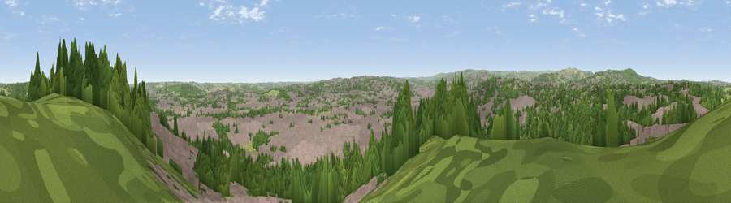

Viewpoint near Sheffield
#17976 in England · top 23% of its area beats it · near SheffieldThe view, rendered

A 360° render of this exact spot computed from the terrain model, tree cover and land cover — summer colours, afternoon light, calibrated against photographs of famous viewpoints. Real trees, hedges and buildings will differ in detail.
The panorama
Grey silhouette: terrain skyline in each direction (720 bearings, Earth curvature and refraction included). Dashed green: skyline with trees (+15 m) and buildings (+8 m) as obstacles. Blue strip: how far the ground is visible on each bearing.
Where the view opens
Wedge length = distance to the farthest visible ground on that bearing (vegetation-aware). Rings at 10, 25 and 50 km.
What fills the view
50% built-up · 37% woodland · 11% grassland · 2% cropland
Angular shares of the visible panorama (visual magnitude), not map area. Landscape diversity 0.45 (0–1 Shannon).
Key numbers
More beautiful places nearby
The staircase of upgrades: each row has a higher view potential than everything closer. Driving times are estimates from straight-line distance, calibrated against real road routing — check an actual route before setting out.
| Place | Direction | Drive | Score |
|---|---|---|---|
| Viewpoint near Oughtibridge | WNW · 6 km | ~12 min | 68.4 |
| Viewpoint near Oughtibridge | WNW · 6 km | ~13 min | 72.5 |
| Viewpoint near Wharncliffe Side | NW · 8 km | ~17 min | 75.2 |
| Viewpoint near Greenfield | WNW · 39 km | ~58 min | 76.0 |
| Wild Bank | W · 39 km | ~59 min | 76.2 |
| Viewpoint near Carrbrook | WNW · 40 km | ~59 min | 77.1 |
| Viewpoint near Otley | NNW · 56 km | ~78 min | 77.5 |
| Viewpoint near Mow Cop | WSW · 61 km | ~84 min | 78.9 |
53.41424, -1.43315 · source: screening · position refined by local search. Computed location — check access rights before visiting.